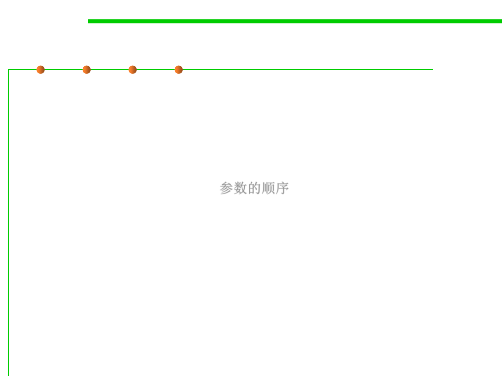

JUnit
7.5 Testing and Test-First Programming
▪ Note that the order of the parameters to assertEquals is important.
– The first parameter should be the expected result, usually a constant, that
the test wants to see.
– The second parameter is the actual result, what the code actually does.
– All the assertions supported by JUnit follow this order consistently:
expected first, actual second. 参数的顺序
▪ If an assertion in a test method fails, then that test method returns
immediately, and JUnit records a failure for that test.
▪ A test class can contain any number of @Test methods, which are run
independently when you run the test class with JUnit.
▪ Even if one test method fails, the others will still be run.